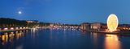
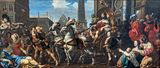
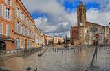
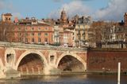
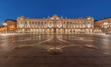
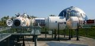
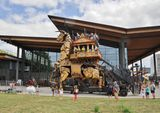
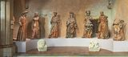
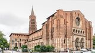
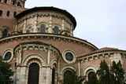

Cité de l'espace, Toulouse
Imagen por Kallerna , disponible en Wikimedia Commons bajo la Licencia Creative Commons Atribución-CompartirIgual 4.0 Internacional .

Panorama from pont Saint-Pierre in Toulouse
Imagen por PierreSelim , disponible en Wikimedia Commons bajo la Licencia Creative Commons Atribución 3.0 Unported .

The triumph of Joseph (1657) by Hilaire Pader. Toulouse Cathedral
Imagen por Didier Descouens , disponible en Wikimedia Commons bajo la Licencia Creative Commons Atribución-CompartirIgual 4.0 Internacional .

Saint-Etienne Square in Toulouse, view from Croix-Baragnon Street
Imagen por Didier Descouens , disponible en Wikimedia Commons bajo la Licencia Creative Commons Atribución-CompartirIgual 4.0 Internacional .

Pont-Neuf de Toulouse
Imagen por Pistolero , disponible en Wikimedia Commons bajo la Licencia Creative Commons Atribución 3.0 Unported .

Place du Capitole. Toulouse
Imagen por Benh LIEU SONG , disponible en Wikimedia Commons bajo la Licencia Creative Commons Atribución-CompartirIgual 3.0 Unported .

Model of Mir at Cité de l'Espace
> Imagen por Mike Peel , disponible en Wikimedia Commons bajo la Licencia Creative Commons Atribución-CompartirIgual 4.0 Internacional .

The giant mechanical minotaur and the hall of the company La Machine, in Toulouse (France).
Imagen por Frédéric Neupont , disponible en Wikimedia Commons bajo la Licencia Creative Commons Atribución-CompartirIgual 4.0 Internacional .

Prophets and Sibyls of Saint-Sernin
Imagen por Didier Descouens , disponible en Wikimedia Commons bajo la Licencia Creative Commons Atribución-CompartirIgual 4.0 Internacional .

Basilica Saint-Sernin
Imagen por Didier Descouens , disponible en Wikimedia Commons bajo la Licencia Creative Commons Atribución-CompartirIgual 4.0 Internacional .

Basilica Saint-Sernin
Imagen por José Luiz , disponible en Wikimedia Commons bajo la Licencia Creative Commons Atribución-CompartirIgual 3.0 Unported .
Curiosity model at Cité de l'Espace
Imagen por Rama , disponible en Wikimedia Commons bajo la Licencia Creative Commons Atribución-CompartirIgual 3.0 Francia .
MIR model at the Cité de l'Espace
> Imagen por Celeda , disponible en Wikimedia Commons bajo la Licencia Creative Commons Atribución-CompartirIgual 4.0 Internacional .
Orion spacecraft model at Cité de l'Espace
Imagen por Rama , disponible en Wikimedia Commons bajo la Licencia Creative Commons Atribución-CompartirIgual 3.0 Francia .
Astrovan replica at the Cité de l'Espace
Imagen por Rama , disponible en Wikimedia Commons bajo la Licencia Creative Commons Atribución-CompartirIgual 3.0 Francia .
Apollo space suit at Cité de l'Espace
> Imagen por Rama , disponible en Wikimedia Commons bajo la Licencia Creative Commons Atribución-CompartirIgual 3.0 Francia .
Musée de la Cité de l'Espace
Imagen por Celeda , disponible en Wikimedia Commons bajo la Licencia Creative Commons Atribución-CompartirIgual 4.0 Internacional .
Radio antenna, Cite de l'espace
Imagen por Mike Peel , disponible en Wikimedia Commons bajo la Licencia Creative Commons Atribución-CompartirIgual 4.0 Internacional .
Musée de la Cité de l'Espace
Imagen por Celeda , disponible en Wikimedia Commons bajo la Licencia Creative Commons Atribución-CompartirIgual 4.0 Internacional .
Video página inicial
Quelques monuments Toulousain réalisé avec notre drone pour la ville ( cat S3 ) avec un GH4.
Hôtel-Dieu Chapelle de la Grave, Le pont Saint Pierre Le pont-Neuf La Basilique de la Daurade Pont des Catalans
Le Stadium
Video por Damien-VICART , disponible en Wikimedia Commons bajo la Licencia Creative Commons Atribución 3.0 Unported .